Seminario de Lenguajes. JavaScript
Clientes y servidores
Cuando visitamos un sitio web con nuestro navegador predilecto (Firefox, Chrome, Edge, etc.) se produce una conexión vía Internet entre un cliente ─quien inicia la conexión y solicita el contenido del sitio web─ y un servidor ─quien recibe la conexión y envía el contenido solicitado.
Clientes y servidores
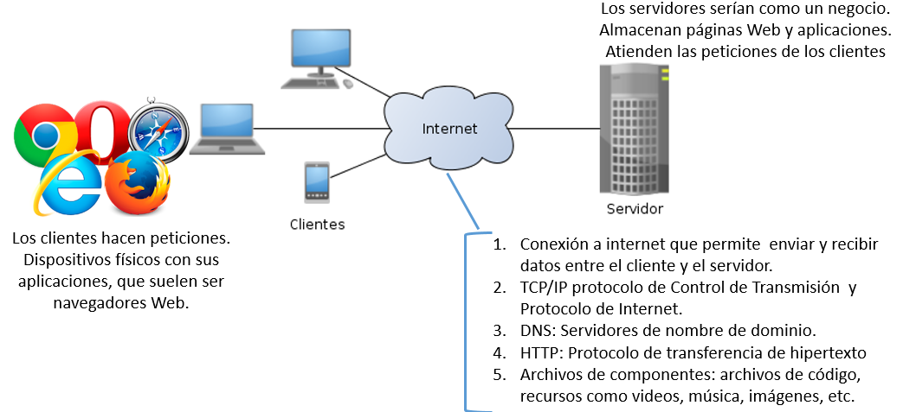Clientes y servidores - Protocolo de comunicación
El navegador se conecta con el DNS para localizar la dirección del servidor (la dirección de la tienda)
El navegador envía un mensaje de petición HTTP al servidor pidiéndole que envíe una copia de la página Web del cliente. Este mensaje se envía a través de la conexión a Internet usando TCP/IP
Clientes y servidores - Protocolo de comunicación
Si el servidor aprueba la solicitud del cliente, envía “200 OK” y comienza a enviar los archivos de la solicitud, en trozos pequeños llamados “paquetes de datos”.El navegador reúne todos esos trozos, forma el sitio Web completo y te lo muestra (tus nuevas compras de la tienda están en casa).
Clientes y servidores - DNS
- Las direcciones Web están formadas caracteres que se transforman en secuencias de números denominadas direcciones IP.
- Una dirección IP representa un único lugar en la Web.
- Para que puedan recordarse fácilmente se crearon los servidores de nombres de dominio, que se ocupan de coincidir la dirección IP con la dirección tecleada en el navegador.
Clientes y servidores - DNS

Protocolo HTTP
¿QUÉ ES HTTP Y HTTPS? | Aprende que es http, https y para que utiliza en menos 5 minutos! Y repasamos... KahootFunciones sincrónicas
JavaScript tiene un hilo de proceso único, lo que significa que dos porciones del script no pueden ejecutarse al mismo tiempo, deben hacerlo una después de la otra
Veamos un ejemploSimulación de pila de ejecución y llamadas
Funciones sincrónicas
function saludar(name) {
return `Hola, mi nombre es ${name}!`;
}
const name ='Trinidad';
const saludo = saludar(name);
console.log(saludo);
saludar() espera a que se termine de ejecutar para continuar con el resto del código
Asincronismo en JS
El asincronismo es una técnica que permite al programador habilitar una tarea que potencialmente va a demorar y en lugar de esperar continua respondiendo a otros eventos miesntras la tarea se sigue ejecutando. Es similar a la atención de un mozo en un restaurant.
Asincronismo en JS
En JS se da también,por ejemplo cuando tenemos que acceder a un archivo, a una base de datos, a una API, entre otras posibilidades.}
Funciones asincrónicas en JS
- fetch() para hacer requirimientos HTTP
- getUserMedia() para acceder a la cámara o microfono del usuario
- showOpenFilePicker() para permitir al usuario subir un archivo
¿Qué sucede si una función tarda demasiado en ejecutar?
Es bloqueado y no es posible seguir ejecutando.
Funciones asincrónicas
En algunos casos, sería ideal:
- Ejecutar una función que lleva un tiempo
- Mientras se ejecuta, el programa continúa ejecutando otros eventos
- Ser notificado del resultado de la ejecución
Funciones asincrónicas
Temporizador. Recibe la función a ejecutar callback luego del tiempo que esperará para ejecutarla time
setTimeOut(callback,time);
// Se ejecuta la función luego de 2 segundos (2000 milisegundos)
setTimeout(function() {
console.log("Función ejecutada!");
}, 2000);
// Función =>. Más legible
setTimeout(() => console.log("Función ejecutada!"), 2000);
Funciones asincrónicas
Se utiliza la API XMLHttpRequest para asociar eventos asincrónicos, con un manejador de eventos. Es un mecanismo muy confuso y con algunos problemas en la gestión de las funciones callbacks. La opción es usar Promesas o Promise.
Objeto promise o promesas
Imaginemos que somos un cantante de rock y nuestros fans preguntan día y noche cuando va a estar nuestra próxima canción. Generás una lista para que dejen ahí su email y les avisarás cuando esté la canción, para que todos la reciban cuando la canción esté disponible. Si algo sale mal, un incendio en el estudio por ejemplo, también le vas a avisar. Nadie sale abrumado y los fanáticos no se pierden la canción.
Promesas en JS
En la vida real tenemos:
- Un código productor (el cantante) que se toma su tiempo para cargar los datos a travès de una red
- Un código consumidor, que requiere el resultado del código consumidor. Muchas funciones pueden requerir este código, son los fans
- Una promesa es el código de JS que une al productor con el consumidor
Promesas
Las promesas cuentan de 2 partes: cómo se crean (preparar una función para que use promesas y se puedan consumir) y cómo se utilizan (se consumen)
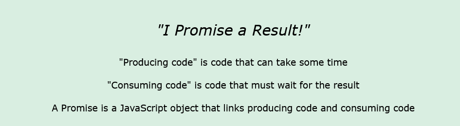 JavaScript Promise. w3schoolsObjeto promesa

La función se denomina ejecutor. resolve y reject son funciones callbacks proporcionadas por JS.
El ejecutor corre automáticamente e intenta realizar una tarea.
Cuando termina con el intento, llama a resolve si fue exitoso o reject si hubo un error.
Objeto Promise - Propiedades
- state: inicialmente "pendiente", luego cambia a "cumplido" cuando se llama a resolve o "rechazado" cuando se llama a reject.
- result: inicialmente undefined, luego cambia a valor cuando se llama a resolve(valor) o error cuando se llama a reject(error).
Estado de una promesa
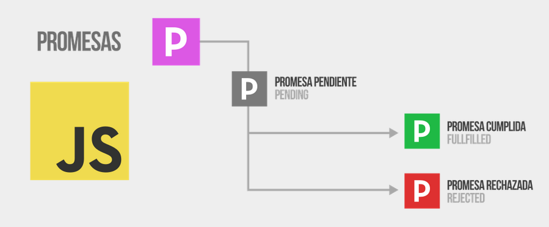Objeto Promise - Métodos
Las funciones consumidoras (los “fanáticos”), recibirán el resultado o error. Las funciones de consumo pueden registrarse (suscribirse) utilizando los métodos .then, .catch y .finally.
Objeto Promise - Llamado
- .then() cuando se ejecuta correctamente
- .catch() cuando hubo error
Objeto Promise - Ejemplo
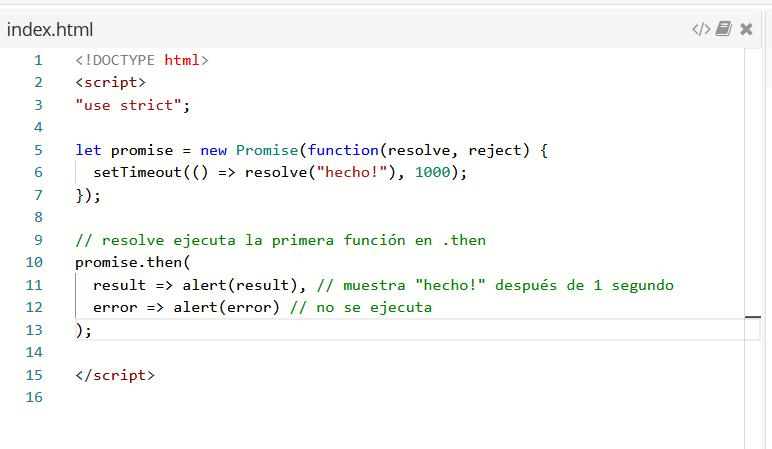Objeto Promise - Ejemplo
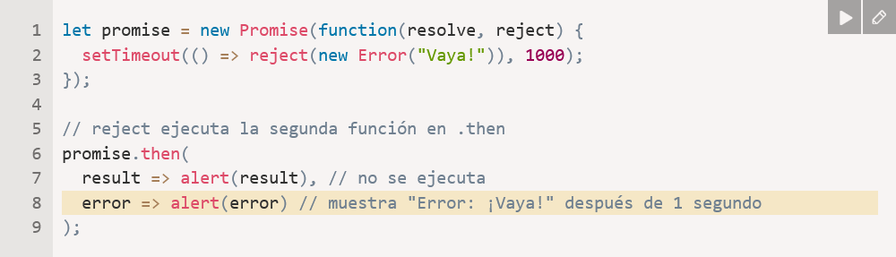Objeto Promise - Finally
Es similar a .then(f, f). Se ejecuta siempre más allá del resultado.
f siempre se ejecuta cuando se resuelve la promesa: ya sea que se resuelva o rechace.
Útil para realizar la limpieza

Ejemplos Completo
Ejemplo función loadScriptVentajas de las promesas
- Permiten hacer las cosas en el orden natural. Primero, ejecutamos loadScript (script), y .then escribimos qué hacer con el resultado.
- Podemos llamar a “.then” en una promesa tantas veces como queramos. Cada vez, estamos agregando un nuevo “fan”, una nueva función de suscripción, a la “lista de suscripción”.
- Las promesas se pueden encadenar en una Cadena de promesas
Async await
Es similar al anterior, es una mejora en la sintaxis.
Permite escribir código asíncrono
Application Programming Interface - API
Una API es una interfaz para manipular aspectos del navegador y del SO donde se ejecuta la aplicación.
Los lenguajes de programación brindan herramientas para construir y consumir APIs.

Web APIs
En el entorno de la Web, del lado del cliente existen muchas APIs que están construidas sobre el núcleo del lenguaje de programación.
Se dividen en 2 categorías:
- APIs del navegador o Brower API. Extender la funcionalidad del navegador, por ejemplo para gestionar audio.
- APIs de terceros, como Twitter, Facebook, ...
¿Qué podemos hacer con una API?
- API DOM para manipular documentos.
- API Fetch para recuperar datos de un servidor, usadas para actualizar pequeñas partes de un sitio Web.Ajax.
- API para manipular gráficos, como Canvas.
- API de audio y video
- API de almacenamiento, como Web Storage.
- API de dispositivos, como geolocalización.
Ejemplo de Ajax
¿Cómo funcionan las APIs?
Las APIs interactuan usando objetos JS que sirven como contenedores de los datos de la API (propiedades) y brinda la funcionalidad que la API provee.
Es necesario sus puntos de acceso. Por ejemplo, para la API DOM contamos con createElement("em"), querySelector("p")
API Fetch
- Provee un método global fetch() para proporcionar recursos de la red en forma asincrónica utilizando objetos Promise.
- Genera código más legible y menos verbose.
- Es sencillo y permite asociar otros conceptos relacionados con HTTP como CORS y extensiones HTTP.
Ejemplo de uso de fetch()
// Realizamos la petición y guardamos la promesa
const request = fetch("/mis-gatitos.txt");
// Si es resuelta, entonces ejecuta esta función...
request.then(function(response) { ... });
//Será rechazada si por alguna razón no pudo completar la petición, como fallo en la red.
Objeto Response
Cuando se ejecuta una promesa, se retorna una instancia de Response
El Objeto Response - Propiedades
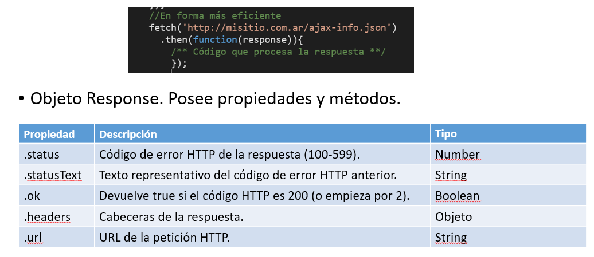El Objeto Response. Métodos
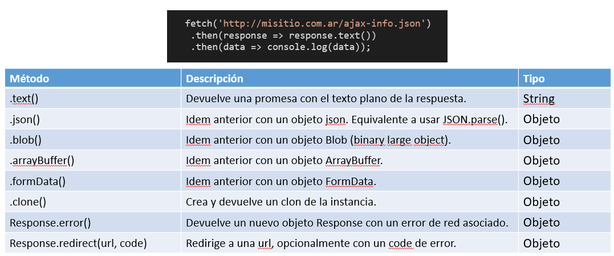Objeto Response
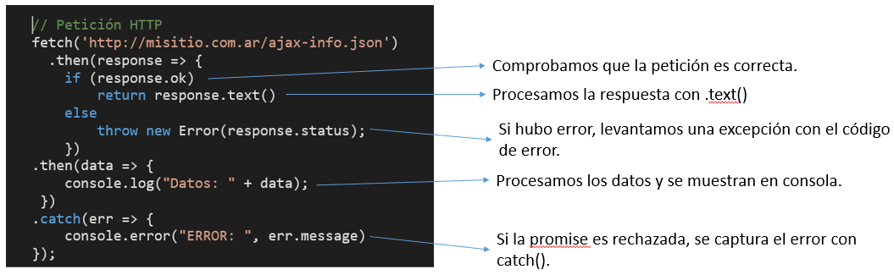 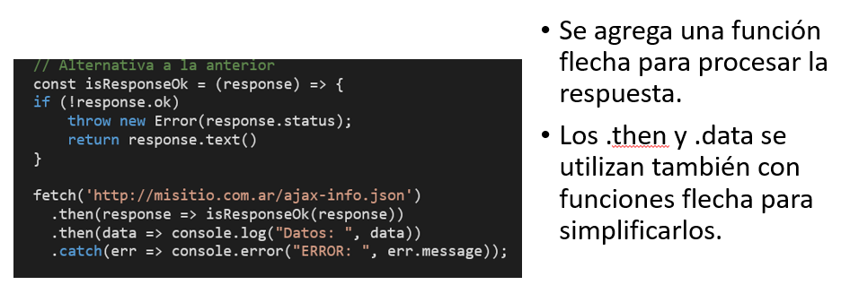Ejemplo de uso de fetch()
Forma habitual
fetch("/mis-gatitos.txt")
.then(function(response) {
/** Código que procesa la respuesta **/
});
Ejemplo de uso de fetch()
fetch("https://mdn.github.io/learning-area/javascript/oojs/json/superheroes.json")
.then(response => response.text())
.then(data => console.log(data))
.finally(() => console.log("Terminado!"))
API Fetch
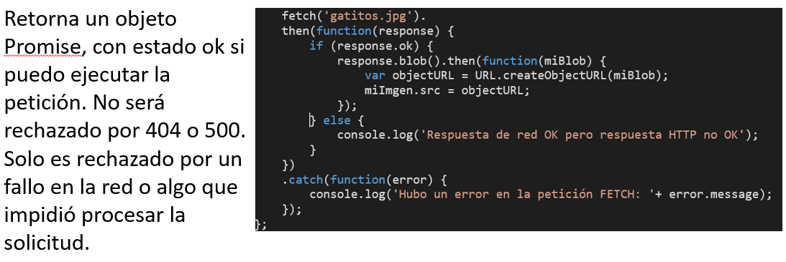fetch(url, options)
url: obligatorio
options: objeto con los siguientes parámetros.
- method: string. Método de la petición HTTP. Por defecto GET.
- headers: objeto. Cabeceras HTTP. Por defecto {}, es posible indicar el Content-type y el encoding por ejemplo.
- body: cuerpo de la petición HTTP. Puede ser de distinto tipo, como String, Blob, etc.
- credentials: string. Modo de las credenciales. Por defecto omit. same-origin utiliza las credenciales del mismo dominio. Include incluye las credenciales incluso en otros dominios. Fetch, por defecto, no envía ni recibe cookies resultando en peticiones no autenticadas. Si es necesario, configurar credentials la opción init.
- cors: Cross-origin Resource Shearing. Para realizar peticiones a otros dominios. Por defecto las peticiones se realizan en el mismo dominio. no-cors
fetch() - Parametros - Opciones
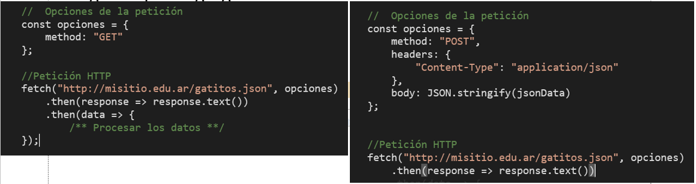fetch() - Encadenamiento
fetch("/mis-gatitos.txt")
.then(response => {
return response.text(); // Retorna una promesa
})
.then(data => {
console.log(data);
})
.catch(error => { /* Código a ejecutar cuando se rechaza la promesa */
});
fetch() - Encadenamiento con arrow functions
// Petición HTTP
fetch("https://mdn.github.io/learning-area/javascript/oojs/json/superheroes.json")
.then(response => response.text())
.then(data => console.log(data))
.finally(() => console.log("Terminado."))
.catch(error => console.error(data));
Las arrow functions tienen un return implícito. En este caso, el primer .then() devuelve la promesa que retorna el método .text(). Esta promesa usa el segundo .then() (encadenamiento).
El objeto response tiene la respuesta a la petición.
Async-Await
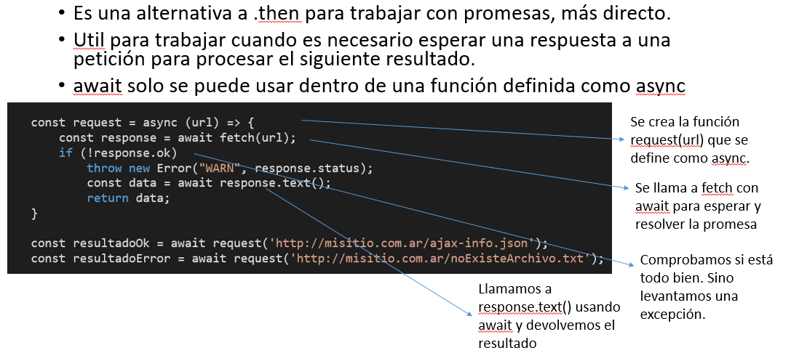Objeto Request
- JS permite crear nuestros propios objetos request, constructor Request.
- Se puede utilizar para pasar como parámetro a fetch
JavaScript Object Notation - JSON
Es un formato ligero de datos, con una estructura específica, que es totalmente compatible con JavaScript y el intercambio de datos. Popularizado por Douglas Crockford.
Formado por un subconjunto de JS. Standard ECMA-262 3rd Edition - Diciembre 1999
Leerlo y escribirlo es simple para humanos y fácil para las maquinas interpretarlo y generarlo.
Los JSON son cadenas, que deben ser convertidas a Javascript para acceder a sus datos.
{
// Objeto vacío
}
- Una colección de pares de nombre/valor
- Una lista ordenada de valores.
JSON
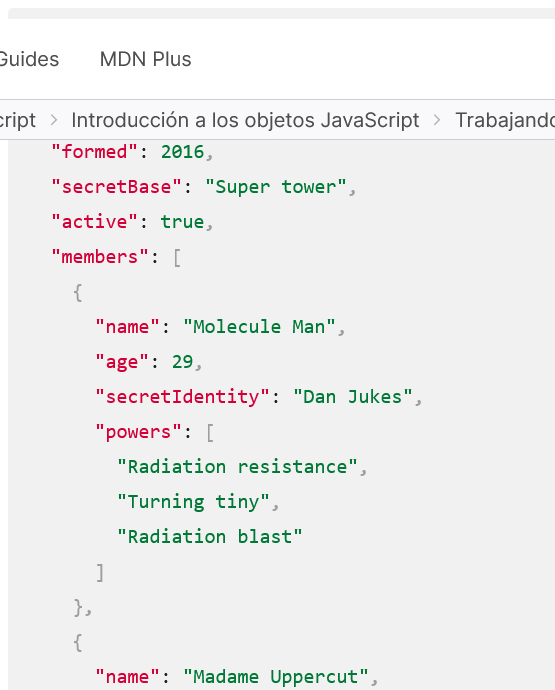JSON Formas
- Objetos
- Strings
- Arreglos
- Number
- Espacios en blanco
JSON - Parser y Stringification
Convertir una cadena a un objeto nativo se denomina parsing, mientras que convertir un objeto nativo a una cadena para que pueda ser transferido a través de la red se denomina stringification
JSON - Parser()
const json = `{
"nombre": "Cato",
"edad": 9
}`;
const mascota = JSON.parse(json);
mascota.nombre; // "Cato"
mascota.edad; // 9
JSON - Stringify()
const mascota = {
nombre: "Cato",
edad: 9,
talk: function () {
return "Miau!";
},
};
JSON.stringify(mascota); // '{"mascota":"Cato","edad":9}' Las funciones No son soportadas
JSON Ejemplo
superHeroes.homeTown
superHeroes['active']
superHeroes['members'][1]['powers'][2]
JSON
Algunas consideraciones importantes..
- JSON es sólo un formato de datos — contiene sólo propiedades, no métodos.
- JSON requiere usar comillas dobles para las cadenas y los nombres de propiedades. Las comillas simples no son válidas.
- validar JSON utilizando una aplicación como JSonlint
Referencias
Asincronía en JSPromesas en JS
Promise Basics
Using Fetch
Herencia de cadenas de prototipos
Interpolación de cadenas en JS
JSon Specification
Client-side Web APIs. MDN Documentation